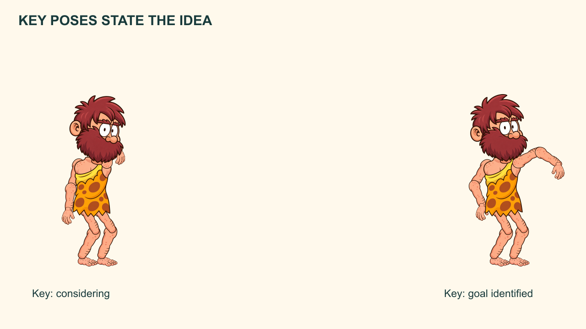
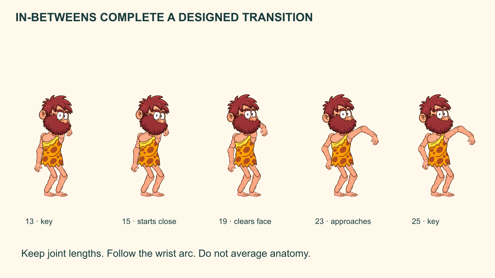
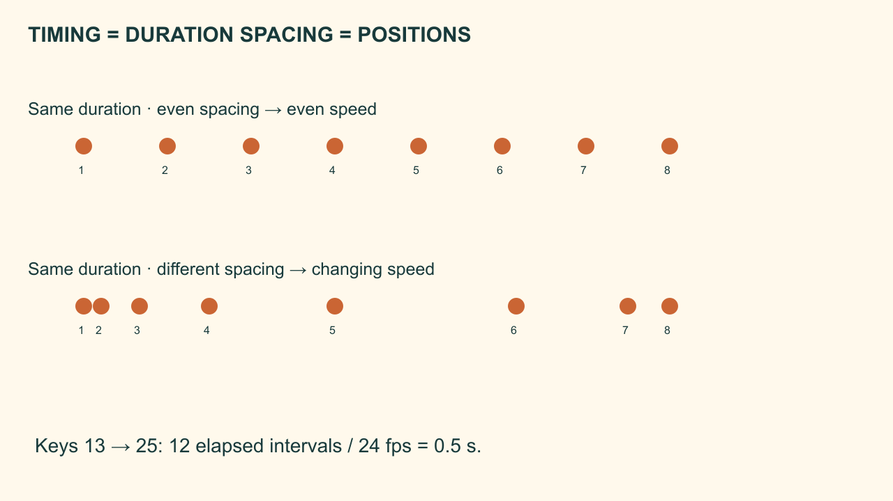

A designed breakdown clears the hand around the face and lets the head lead.
The Caveman and the Third Stone
Build a short acting phrase whose transition is designed rather than left to default interpolation.
Workbook 3 of 8 · two provisional sessions
My supports
Turn on any help you want. Your teacher may have set some for you. They change how the guide helps, not what is assessed.
Continue the same film
Open your selected production FLA from Workbook 02, then File → Save As → Caveman_03_acting.fla. Carry forward all three Scenes and the entire Library. Keep repair/director copies separate, then return to the chosen production version. Do not begin a fresh blank project.
Your production job
Build a short acting phrase whose transition is designed rather than left to default interpolation.
Keep: Think_Point Graphic + stepped and refined versions + a timing comparison
Notes and checked stages stay in this browser when storage is available. They are not submitted, graded or shared with school apps. Read aloud uses the browser voice; teacher recordings have not been supplied.
Restore uses the JSON recovery file from this workbook. The readable text file is for review only. Download before changing device. Keep personal information out of practice notes.
How animators work
Block the meaning, test the action, refine the transition and keep a revision trail. A smooth result still needs readable intention, believable contact and a clear delivery.
Understand before you move
Keys state the important poses. A breakdown designs how the action travels between them. In-betweens complete that designed transition.
A timeline keyframe stores a change; a storytelling key pose is an important idea in the performance. They are not synonyms. Timing is how long an action takes. Spacing is how positions are distributed through that time. A classic tween interpolates transforms; it does not understand anatomy, contact or intention.
Predict the result of today’s main action, then test that prediction in Animate.
Evidence of understanding
We look for the finished action, an observed repair and a brief explanation using your own timeline.
Independent director condition: The Caveman notices a distant noise before pointing at the stone. Add a head-led change of attention without losing the original story goal.
Defence: Which drawing is your breakdown, and what does it decide that a mathematical midpoint would miss?
Support settings help access the same task. They do not lower the success criteria. School outcome/assessment registration remains for the teacher to confirm.
Session 1 · Lesson 1
Build and understand
Provisional 70-minute session: a short explanation, four guided stages, then a check. Actual classroom timing needs a cold run.
TODAYBuild a short acting phrase whose transition is designed rather than left to default interpolation.
01
Block the two storytelling keys
IN SHORTThe two important poses have distinct silhouettes and the pointing hand indicates the goal.
READ ALOUD
DOCUMENT: Caveman story · Workbook 03 · main Scene or named action as stated below SELECT: A new Think_Point Graphic copied from the neutral character. TOOLS / ROUTE: Library → Duplicate; symbol timeline; Insert Keyframe.
Keep neutral at frame 1. At frame 13 pose a clear thought: head inclines toward the beard hand. At frame 25 pose a clear point toward the goal.
Extend every part layer through frame 25. Keep only held keys while judging the performance; do not tween yet.
Write the intention under each key: “I am considering” and “There is my goal.”
STEP CHECKLIST
GLOSSARY
key pose: An important pose that communicates the action or intention.
stepped blocking: Reviewing held poses before creating transitions.

Storytelling keys communicate consideration and a decision.
WHYKeys must communicate the action before smoothness can improve it.
CHECKThe two important poses have distinct silhouettes and the pointing hand indicates the goal.
FIXIf the point reads as a wave, straighten the intended arm direction and make the head/gaze support it.
WORKED EXAMPLE · DIFFERENT OBJECTFor a cat turning to a sound, the starting gaze and final gaze are keys; they do not yet specify the route.
STRETCH (AFTER THE CHECK PASSES)Make the thought register using a torso shift as well as a hand position.
Method basis: A1 · A2. Values and sequence are authored for this project.
02
Design the breakdown at frame 19
IN SHORTThe hand passes around the face rather than through it, and the viewer can follow the intended route.
READ ALOUD
DOCUMENT: Caveman story · Workbook 03 · main Scene or named action as stated below SELECT: All animated part layers at frame 19 inside Think_Point. TOOLS / ROUTE: Insert Keyframe; Onion Skin; Free Transform.
Insert keys at frame 19 between the thought and point. Move the elbow outward so the hand clears the beard before extending.
Let the head begin to face the goal before the pointing arm fully extends. Keep shoulder, elbow and wrist connected.
Compare this pose with a simple halfway blend. Label the decision: “hand clears face; head leads.”
STEP CHECKLIST
GLOSSARY
breakdown: A designed transition pose that explains how keys connect.
arc: A curved path followed by a moving point.
WHYA breakdown chooses an arc, body relationship and order of movement. It need not be halfway in space or halfway in time.
CHECKThe hand passes around the face rather than through it, and the viewer can follow the intended route.
FIXIf the hand cuts through the beard, widen the elbow path or move the breakdown earlier; do not add random frames around a bad route.
WORKED EXAMPLE · DIFFERENT OBJECTA bird’s wing can fold near the body during recovery rather than taking the shortest straight-line route.
STRETCH (AFTER THE CHECK PASSES)Place the breakdown at frame 17 instead and describe the change in emphasis.
Method basis: A1 · A2. Values and sequence are authored for this project.
03
Add purposeful in-betweens
IN SHORTThe wrist path is smooth, joints remain connected and the final point does not snap unexpectedly.
READ ALOUD
DOCUMENT: Caveman story · Workbook 03 · main Scene or named action as stated below SELECT: Part layers between frames 13–19 and 19–25. TOOLS / ROUTE: Insert Keyframe; Onion Skin; frame-by-frame posing.
Add in-between poses at frames 15, 17, 21 and 23. Keep the wrist on a smooth arc and maintain limb lengths.
Place the first movement close to the thought pose, allow larger spacing through the extension, then reduce spacing near the final point.
Play frames 13–25 repeatedly. Remove any in-between that introduces a kink; redraw or repose it instead of hiding it with more frames.
STEP CHECKLIST
GLOSSARY
in-between: A pose or drawing filling the transition between designed poses.
spacing: The distance between positions on successive frames.

Transition planning strip. Additional poses follow a designed route while preserving joint lengths.
WHYAdditional drawings help only when their placement supports the intended motion.
CHECKThe wrist path is smooth, joints remain connected and the final point does not snap unexpectedly.
FIXIf the forearm changes length, restore the correct elbow-to-wrist distance. If speed is uneven accidentally, compare adjacent wrist spacing.
WORKED EXAMPLE · DIFFERENT OBJECTA pendulum has close positions near its turning points and wider positions through the bottom.
STRETCH (AFTER THE CHECK PASSES)Try animating on twos, then add selected single-frame accents where the action needs precision.
Method basis: A1 · A2. Values and sequence are authored for this project.
04
Compare timing while preserving the route
IN SHORTYou distinguish interval duration from inclusive frame count and can explain the acting difference.
READ ALOUD
DOCUMENT: Caveman story · Workbook 03 · main Scene or named action as stated below SELECT: A duplicate Think_Point_Slow; same poses and arc. TOOLS / ROUTE: Timeline → move keyframes and extend all part layers.
Duplicate the action. In the slow version, move the final point from frame 25 to frame 37 and distribute the transition keys over the longer interval.
Keep the designed arc and relative pose order. Compare the two versions side by side or in sequence.
Calculate elapsed time between key 13 and key 25: 12 intervals ÷ 24 = 0.5 seconds. A 24-frame exported clip itself lasts one second.
STEP CHECKLIST
GLOSSARY
timing: The duration and placement of events in an action.
frame interval: The elapsed time from one frame position to the next.

Same frame intervals, different position spacing: duration and speed distribution are distinct.
WHYChanging duration can change intention from quick recognition to careful consideration without changing the spatial route.
CHECKYou distinguish interval duration from inclusive frame count and can explain the acting difference.
FIXIf a layer ends early, extend it to the new final frame. Do not change the document fps to make one action slower.
WORKED EXAMPLE · DIFFERENT OBJECTA lid closing over 6 intervals feels brisk; the same route over 24 intervals feels deliberate.
STRETCH (AFTER THE CHECK PASSES)Keep duration fixed and change only spacing; describe why the result differs.
Method basis: A1 · A2. Values and sequence are authored for this project.
Session 2 · Lesson 2
Refine, repair and direct
Provisional 70-minute session: a short explanation, four guided stages, then a check. Actual classroom timing needs a cold run.
TODAYBuild a short acting phrase whose transition is designed rather than left to default interpolation.
05
Use a classic tween as a comparison
IN SHORTYou can show an interpolated midpoint, identify a problem or justify why it works, and preserve your intended breakdown.
READ ALOUD
DOCUMENT: Caveman story · Workbook 03 · main Scene or named action as stated below SELECT: A duplicate test action with one Graphic instance on each animated part layer. TOOLS / ROUTE: Right-click between two keys → Create Classic Tween.
On the duplicate, test a classic tween between two pose keys. Select the span, not the Stage object, to inspect tween properties.
Scrub the midpoint and the elbow/hand contact. If a rotation takes the long way, inspect rotation settings and use the shortest suitable route.
Retain manual breakdown keys where the default interpolation produces a poor arc or broken joint. Do not claim the default tween designed your performance.
STEP CHECKLIST
GLOSSARY
classic tween: Interpolation of properties of an instance between keyframes.
interpolation: Calculating intermediate values between defined values.
WHYA tween can save repetitive placement, but it must be judged against pose and path decisions.
CHECKYou can show an interpolated midpoint, identify a problem or justify why it works, and preserve your intended breakdown.
FIXA dashed or failed span usually means unsuitable contents or mismatched symbols. Use one appropriate instance per layer and matching definitions at the ends.
WORKED EXAMPLE · DIFFERENT OBJECTA sliding title is a good interpolation task; a hand avoiding a face needs an intentionally designed route.
STRETCH (AFTER THE CHECK PASSES)Test uniform versus eased timing on the pointing hand and justify the selected version.
Method basis: A1 · A2. Values and sequence are authored for this project.
06
Add anticipation and a restrained settle
IN SHORTThe performance has a clear main action with a smaller recovery, rather than repeated bouncing.
READ ALOUD
DOCUMENT: Caveman story · Workbook 03 · main Scene or named action as stated below SELECT: Think_Point final pose and following frames. TOOLS / ROUTE: Insert Keyframe at 11, 25, 28 and 32 as needed.
Extend EVERY part layer through frame 32 and extend the placed action’s parent exposure to match. Before the point, let the hand draw slightly inward and the torso prepare. Keep this anticipation small enough to preserve the thought.
Let the arm reach a little beyond its settled point at frame 25, recover at 28 and rest at 32. Repose joints; do not merely wobble the whole picture.
Allow a smaller head or hand follow-through a frame or two after the torso settles.
STEP CHECKLIST
GLOSSARY
anticipation: A preparation that helps viewers read the coming action.
overshoot: Passing slightly beyond the final position before returning.
settle: A decreasing recovery into rest.
WHYPreparation makes the action legible; overshoot and settle suggest effort being absorbed.
CHECKThe performance has a clear main action with a smaller recovery, rather than repeated bouncing.
FIXIf the settle distracts, reduce its amplitude and number of changes. Check the final pointing direction again.
WORKED EXAMPLE · DIFFERENT OBJECTA person reaching for a shelf may shift weight first, reach beyond the target slightly and relax into the hold.
STRETCH (AFTER THE CHECK PASSES)Make a cautious and an excited version using the same final pointing pose.
Method basis: A1 · A2. Values and sequence are authored for this project.
07
Diagnose the straight-line hand
IN SHORTThe repaired route has a visible clearance and retains the character’s joint proportions.
READ ALOUD
DOCUMENT: Caveman story · Workbook 03 · main Scene or named action as stated below SELECT: A fresh two-key comparison duplicate; preserve your designed version. TOOLS / ROUTE: Delete selected transition keys only in the test copy.
In the comparison copy, keep only the thought and point endpoint keys for the transition. Remove the manual breakdown AND its manual in-betweens, then create classic spans with one matching Graphic instance on each animated part layer. Play this default interpolation and observe whether the hand cuts through the face or loses readability. If that particular pose pair does not cause an intersection, record the actual path/silhouette difference instead of inventing a fault.
Restore or redesign the breakdown and compare the wrist path with Onion Skin.
Explain the repair in terms of route and silhouette, not simply the number of frames.
STEP CHECKLIST
GLOSSARY
path of action: The route followed by a chosen part through the movement.
WHYThe repair tests whether you understand what a breakdown contributes.
CHECKThe repaired route has a visible clearance and retains the character’s joint proportions.
FIXIf the route is still unclear, plot five wrist positions on a guide layer and redesign the curve before making more keys.
WORKED EXAMPLE · DIFFERENT OBJECTA bouncing ball through a wall needs a different route, not just more in-between positions.
STRETCH (AFTER THE CHECK PASSES)Make the repair with fewer transition poses while keeping the motion readable.
Method basis: A1 · A2. Values and sequence are authored for this project.
08
Direct the head-led reaction
IN SHORTThe noise reaction is readable but does not replace the story’s goal or create an unexplained extra event.
READ ALOUD
DOCUMENT: Caveman story · Workbook 03 · main Scene or named action as stated below SELECT: Your independent Think_Point variant. TOOLS / ROUTE: New action duplicate; frame keys; full movie preview.
Add the changed-condition head turn before the pointing hand. Preserve the Caveman’s eventual attention to the third stone.
Create keys, one labelled breakdown and at least two deliberate in-betweens. State which body part leads and which follows.
Save and reopen. Keep a pose strip, a timing note and your brief defence. Place the selected version in Discovery. Use a one-shot Graphic with First 1 and enough parent exposure; stop on a deliberate final pose instead of letting the phrase loop.
STEP CHECKLIST
GLOSSARY
lead and follow: A deliberate order in which body parts start or finish movement.
WHYA new attention cue tests acting and sequence design rather than copying frame numbers.
CHECKThe noise reaction is readable but does not replace the story’s goal or create an unexplained extra event.
FIXIf the head and arm move as one stiff block, offset their starts and preserve a clear pause for recognition.
WORKED EXAMPLE · DIFFERENT OBJECTIndependent task: use the same pose and timing criteria, without a supplied solution.
STRETCH (AFTER THE CHECK PASSES)Use a subtle chest turn to support the head-led reaction.
Method basis: A1 · A2. Values and sequence are authored for this project.
Before you submit
Student QA.
Evidence conversation
Keep it short and specific.
SENTENCE FRAMES
At frame ___, I chose ___ so the viewer could ___. The problem was caused by ___. I changed ___ and checked ___. Under the changed condition, I revised ___ because ___.
Figures marked Illustration are drawn, not screenshots. Step values are starting points authored for this project. Draft for teacher review; not yet classroom-piloted.